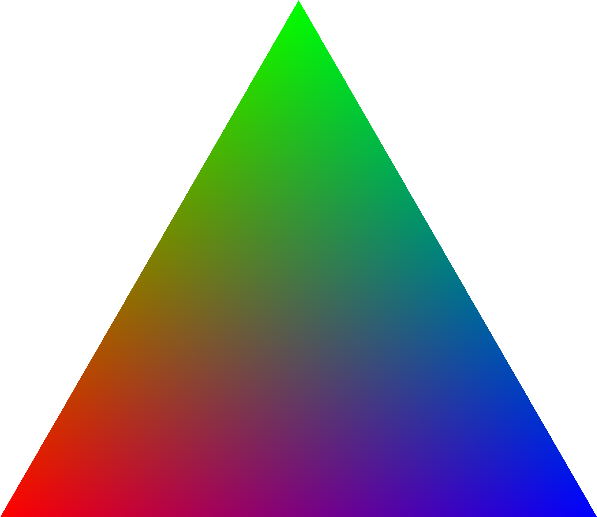

CS 184: Computer Graphics and Imaging, Spring 2019
Project 1: Rasterizer
Nathan Petreaca, CS184-ago
Overview
In this project I implemented a rasterizer. What does this do? Given a set of pixels, a screen, we are able to create shapes and transform them. In terms of images, we are able to display them and also transform them.
This would be simple if our number of pixels was infinite, and so was our processing power, but it is limited. A limit in pixels creates aliasing, a misinterpretation of our image signals which are too high frequency for our limited display. This is an inevitable problem considering that our triangles, the fundamental building block of the shapes we create, are created using lines that have infinite precision. However, we will never be able to have infinite pixels, leading to an undesirable stairstep pattern or jaggies to be created.
To fix this aliasing, our main enemy in this domain, we enact several methods. They are detailed in this report below.
When displaying triangles, we test weather each pixel lies within or outside the triangle to display it. To transform the shapes created from these triangles, we use transform matrices. To use textures on our triangles we use a mapping between triangles in screen space and texture space using barycentric coordinates.
To battle aliasing we implement supersampling to average colors inside pixels, we implement bilinear filtering to average the mapping between a textures color and the color on the display, and we implement mipmaps to average textures as they move away and toward the display.
As we battle aliasing we also battle computation and enact methods to reduce it.
Section I: Rasterization
Part 1: Rasterizing single-color triangles
To rasterize triangles, we basically just need to figure out what side of each line/edge of the triangle a point lies on. If the point lies on the same side of all the edges, it is inside the triangle. We simply use the equation:

We use this equation for each pair of points that define an edge. If all the values are positive, or all negative, then the point is inside the triangle. We test to see if it is all negative or positive to account for differences in winding order (weather we check for the point of on the left side or right side of the edges.)
The points that we check are those from the minimum x and minimum y coordinate to the maximum x and maximum y coordinate of the three edge point that define the triangle. This means that we are only checking at most the bounding box of the points around the triangle.
Part 2: Antialiasing triangles
We are able to rasterize triangles, but some of them do not look so good. They are aliased. The exact triangle dimensions do not fit perfectly into the center of each pixel location, giving stair step patterns and jagged corners. To fix this we use super sampling we see how much of the triangle actually occupies the inside of each pixel and average the color accordingly. To do this, we simply sample at more than just the center of the pixel and then average the samples. For example, if a red triangle is sampled in 2 positions of the pixel it will be half red half the background color.
The only modifications I needed to make was to add looping inside the pixels depending on how many samples were to be done, and then going through the samples and averaging.
Below we see the effects of super sampling. With a higher rate of sampling some of the high frequency areas are able to be represented. Each pixel acts as a low pass filter on its subsamples.
|
Sample rate 1.
|
 Sample rate 4.
Sample rate 4.
|
|
Sample rate 9.
|
Sample Rate 16.
|
Part 3: Transforms
Here we have a cube man who is represented with a hierarchal structure. This means that moving the arm will also move the hand. To move each part, we can use transforms in the form of matrices.
Now that we can make triangles, we can move, scale and rotate them around. I tried to make robot man walk like an Egyptian.
Section II: Sampling
Part 4: Barycentric coordinates
Barycentric coordinates are simply a way of representing the values of a triangle or other shape through a linear combination of its vertices. By doing this, you can achieve a continuous shade / transition of values like color. Looking at the provided image below, each vertex is defined a separate color (red, green, blue). The colors at each point represent the Barycentric coordinates that can be produced at each point.

https://commons.wikimedia.org/wiki/File:Barycentric_RGB.png.
Here we mapped the points on the color wheel to a triangle like the one shown above. By using barycentric coordiantes we can map a point in the screen space (the color wheel) to a point in the color triangle.
Part 5: "Pixel sampling" for texture mapping
Pixel sampling isn’t really described by its term. It is more like texel sampling. To texel sample is the technique of mapping a texel in the texture space to pixels in the screen space. In this particular case, triangles / a mesh of triangles, are the connection between the two spaces. Each triangle in the screen space is associated with a triangle in the texture space. Thus, by using Barycentric coordinates, the color of a position on the screen triangle can be evaluated associating it to the triangle in the texture space.
Using Barycentric coordinates, a mapping from a point in screen space (x,y) to a point in texture space (u,v) is made.
In this case, there are two different ways of sampling the texture space, nearest and bilinear. Nearest simply finds the point closest to (u,v) and returns that. Bilinear finds the four closest points and averages their colors.
|
nearest sampling at 1 sample per pixel .
|
 bilinear sampling at 1 sample per pixel.
bilinear sampling at 1 sample per pixel.
|
|
nearest sampling at 16 samples per pixel.
|
bilinear sampling at 16 samples per pixel.
|
Looking at the results, super sampling definitely gives the best results, but it gives them at some cost. Bilinear is a little bit smoother than nearest especially in the white lines of the map.
Part 6: "Level sampling" with mipmaps for texture mapping
Level sampling is the process of first creating a pyramid of textures that are progressively smaller and then using the appropriate texture for its distance in a scene. This pyramid is called a mipmap. For example, if there was a brick wall near our view and a brick wall away from our view, instead of sampling from the same texture for both brick walls, we can choose a lower level / smaller texture in our pyramid for the far away wall, and a higher/ larger texture for the close by wall. This prevents aliasing that can occur from sampling a large texture that has been minified.
|
L_ZERO and P_NEAREST.
|
L_ZERO and P_LINEAR .
|
|
L_NEAREST and P_LINEAR .
|
L_NEAREST and P_LINEAR.
|
L_LINEAR and P_LINEAR.
Above you can see all the combinations of the settings. Bilinear creates the best results in terms of smoothing regardless of level, but requires four times the computation. In terms of the mipmap levels, Bilinear filtering between two levels seems too give a bit of improvement for twice the computation. If you look at the difference between nearest level selection with bilinear sampling and trilinear sampling, there does not seem to be that much difference. So, if I wanted a good medium between Trilinear and level zero with nearest, I would go for L_NEAREST and P_LINEAR. At least that is what it seems to me.